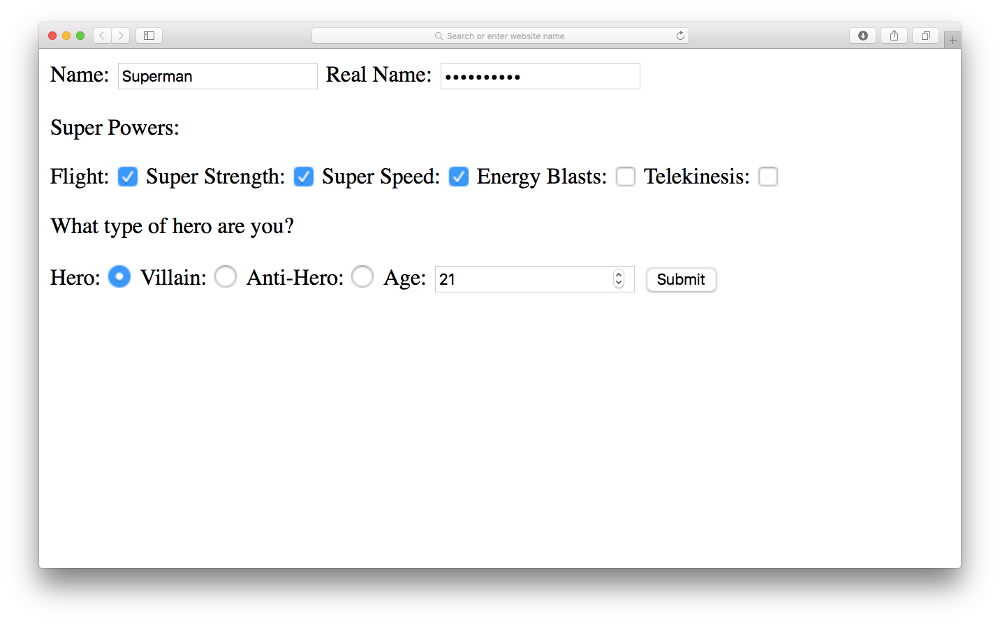

Notes PART I
Ajax
- It's a technique that allows web pages to communicate asynchronously with a server, and it dynamically updates web pages without reloading. This enables data to be sent and received in the background, as well as portions of a page to be updated in response to user events, while the rest of the program continues to run.
- A client, such as a web browser, will request a resource (usually a web page) from a server, which processes the request and sends back a response to the client. Ajax allows JavaScript to request resources from a server on behalf of the client.
- A server is required when requesting resources using Ajax. Typically this involves using a server-side language, such as PHP, Ruby, Node.js, or .NET to serve the data response following an Ajax request (usually from a back-end database).
- Ajax was a neat acronym that referred to the different parts of the process being used: Asynchronous JavaScript and XML.
- APIs: An application programming interface (API) is a collection of methods that allows external access to another program or service. This means that developers are able to interact with the data and create mashups of third-party services.
- Fetch API: The Fetch API provides a global fetch() method that
only
has one mandatory argument, which is the URL of the resource you wish to fetch. For example:
fetch('https://example.com/data')
.then( // code that handles the response )
.catch( // code that runs if the server returns an error )
In the example above, the promise will be resolved when a response is received from the URL 'https:example.com/data'. Because it's a promise, we can also use a catch statement at the end to deal with any errors that may occur. - The redirect() method can be used to redirect to another URL. It
creates a new promise that resolves to the response from the redirected URL.
Here is an example of how a redirect response promise would be resolved: fetch(url)
.then( response => response.redirect(newURL)); // redirects to another URL
.then( // do something else )
.catch( error => console.log('There was an error: ', error))
At the present time, there is no support for the redirect() method in any browser. - The text() method takes a stream of text from the response, reads it to completion and then returns a promise that resolves to a USVSting object that can be treated as a string in JavaScript.
- The blob() method is used to read a file of raw data, such as an image or a spreadsheet.
- The json() method is used to deal with these by transforming a stream of JSON data into a promise that resolves to a JavaScript object.
- The Fetch API introduced a Headersinterface, which can be used to create a Headers object, which can then be added as a property of Request and Response objects.
- We can also use Ajax to send information. This can be a variety of formats, but is usually a JSON string.
- The Fetch API includes the FormData interface, which makes it much
easier to submit information in forms using Ajax.
A FormData instance is created using a constructor function:
const data = new FormData(); - The jQuery library is a good option - it has the generic ajax() method that can be used in a very similar way to the fetch() method.
Notes PART II
Forms
- Forms are the primary method used for entering data into a browser. A form is the main component of Google's home page, and most of us use forms every day to log in to our favorite sites.
- Forms have a variety of controls that are used for entering different types of information.
- document.forms is a property that returns an HTML collection of
all the forms in the document, even though there is only one form in our website. We have to
use index notation to return the first (or only) form object, like so:
const form = document.forms[0]; - form.elements will return an HTML collection of all the elements contained within a form.
- Form objects have a number of useful properties and methods that can be used to interact with the form.
- The form.submit() method won't trigger the form submit event.
- The form.reset() method will reset all the form controls back to
their initial values specified in the HTML. We can do the same with a button with a type attribute of reset:
<button type='reset'>Reset</button> - Form Controls:
- <input> fields, including text, passwords, check boxes, radio buttons, and file uploads
- <select> menus for drop-down lists of options
- <textarea> elements for longer text entry
- <button> elements for submitting and resetting forms - Some input fields:
Text, Password, Checkbox, Radio Button, Hidden, File and more. Example:
 - The HTML5 form validation API can be used to automatically validate a form, but only at a basic level, so a custom validation script may be required.
Using FormData Objects Effectively
- It's how we can use FormData to quickly and easily grab everything from a form.
- To work inside of the FormData object we have to have a name attribute.
- We start with a submit listener on to our form.
- Always put a prevent deafault method, so we can do things with what the user typed and stop reloading the page.
- We create a FormData object like this:
let fd = new FormData(myForm) - We can add more things that are not in the form.
- We can convert all the data from the form to a Json Object.
- Code sample on GitHub to practice using FormData:
Click Here.
MDN: Client-Side Form Validation
- Before submitting data to the server, it is important to ensure all required form controls are filled out, in the correct format. This is called client-side form validation, and helps ensure data submitted matches the requirements set forth in the various form controls.
- Form Validation can be seen when we don't enter our data in the format it is expected in a form. If we do that we'll get messages such as:
- "This field is required" (You can't leave this field blank).
- "Please enter your phone number in the format xxx-xxxx" (A specific data format is required for it to be considered valid).
- "Please enter a valid email address" (the data you entered is not in the right format).
- "Your password needs to be between 8 and 30 characters long and contain one uppercase letter, one symbol, and a number." (A very specific data format is required for your data). - Built-in form validation is done by using validation attributes on form elements: required, minlength, maxlength, mix, max, type, pattern.
- We must use JavaScript if you want to take control over the look and feel of native error messages. In this section we will look at the different ways to do this.
- Most browsers support the Constraint Validation API, which consists of a set of methods and properties available on the following form element DOM interfaces:
HTMLButtonElement (represents a <button> element)
HTMLFieldSetElement (represents a <fieldset> element)
HTMLInputElement (represents an <input> element)
HTMLOutputElement (represents an <output> element)
HTMLSelectElement (represents a <select> element)
HTMLTextAreaElement (represents a <textarea> element) - Customizing these error messages is one of the most common use cases of the constraint validation API.
- In some cases, such as custom controls, we won't be able to or won't want to use the Constraint Validation API. We're still able to use JavaScript to validate our form, but we'll just have to write our own. The CSS doesn't need to change very much.